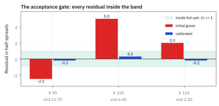
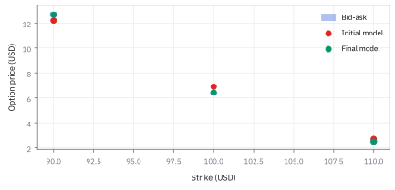
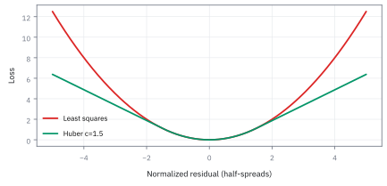
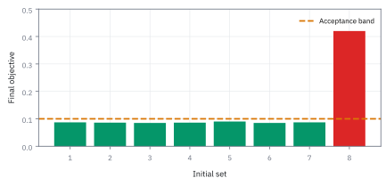
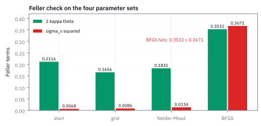

21.4 The Production Calibration Recipe
จาก snapshot bid–ask ถึง parameter set ที่ deploy, reproduce และหยุดใช้ได้อย่างมีวินัย
Option 3 สัญญา มีราคา bid-ask คือ 12.50–12.90, 6.30–6.50 และ 2.40–\$2.60 หาก model ให้ราคา 12.66, 6.43 และ \$2.48 ภายใต้เกณฑ์ residual ห้ามเกิน 1.0 half-spread การ calibrate นี้จะผ่าน acceptance gate หรือไม่?
เฉลย: ผ่าน acceptance gate เพราะทุกราคาอยู่ในช่วง bid-ask โดยมี objective เท่ากับ 0.085 และ maximum residual เพียง 0.30 half-spread ไม่เกินเกณฑ์ 1.0 ที่กำหนด
ศัพท์ของ run ที่คนอื่นต้องตรวจต่อได้
- bid–ask spread
- ช่วงระหว่างราคาที่ซื้อได้และขายได้ ใช้วัดความไม่แน่นอนและ liquidity ของ quote แทนการถือว่า mid เป็นความจริงแน่นอน
- stale quote
- quote ที่เก่ากว่าเวลาที่กำหนดเมื่อเทียบกับ snapshot ใช้คัดออกเพราะไม่ควรบังคับ model ให้ตามอดีต
- crossed market
- สภาวะที่ bid สูงกว่า ask ใช้เป็นสัญญาณ feed หรือ aggregation ผิดและต้อง quarantine
- initial parameter set
- จุดเริ่มของ optimizer ใช้ลดโอกาสตก local minimum และทำให้ run เร็วพอสำหรับ horizon งาน
- multi-start
- การ run optimizer จากหลายจุดเริ่ม ใช้แยกคำตอบที่ robust ออกจากคำตอบที่เกิดจากหุบเฉพาะจุด
- regularization
- penalty ที่ชอบ parameter เรียบหรือใกล้ prior ใช้ลดการ overfit noise และช่วยแก้ปัญหา parameter ชดเชยกัน
- acceptance criteria
- เกณฑ์ผ่านที่กำหนดก่อน run ใช้ตัดสิน deploy จาก residual, bounds, stability และ data quality ไม่ใช่ความรู้สึก
- model governance
- กติกา owner, approval, versioning, monitoring และ rollback ใช้ให้ model risk มีผู้รับผิดชอบตลอดอายุ model
- Maximum A Posteriori (MAP)
- วิธีประมาณค่า parameter จากจุดสูงสุดของ conditional probability ใช้รวมข้อมูลตลาดวันนี้เข้ากับความรู้ตั้งต้นเดิมเพื่อลดความผันผวนข้ามวัน
- Broyden-Fletcher-Goldfarb-Shanno (BFGS)
- algorithm ประเภท quasi-Newton ที่ประมาณความโค้งของเป้าหมายจากความชันในแต่ละรอบ ใช้หาค่า parameter ที่ดีที่สุดโดยไม่ต้องคำนวณ second derivative
สัญลักษณ์และหน่วย
| สัญลักษณ์ | ความหมาย | หน่วย |
|---|---|---|
| $P_i^{bid},P_i^{ask},P_i^{mid}$ | ราคา bid, ask และ mid ของ quote $i$ | USD ต่อหน่วยสัญญา |
| $h_i$ | half-spread ของ quote $i$ | USD ต่อหน่วยสัญญา |
| $\theta,\theta_0$ | parameter ที่ fit และ initial parameter set | ตาม transform ของ model |
| $r_i$ | normalized residual | ไม่มีหน่วย |
| $L$ | calibration objective | ไม่มีหน่วย |
| $\gamma$ | น้ำหนัก regularization | ไม่มีหน่วยหลัง scale |
| $\tau$ | อายุของ quote นับถึง expiry | ปี |
| $\varepsilon$ | tolerance ที่ประกาศก่อน run | ตาม metric ที่ตรวจ |
ที่มาที่ไป: ความต่างระหว่างงานวิจัยกับระบบที่ใช้จริง
ทุกอย่างในบทนี้ทำงานได้ในสมุดบันทึกของนักวิจัย แต่การเอาไปรันทุกวันในระบบจริงเป็นคนละเรื่อง
ความต่างไม่ได้อยู่ที่คณิตศาสตร์ แต่อยู่ที่สิ่งที่ตำราไม่พูดถึง คือข้อมูลตลาดมีราคาผิด ราคาค้าง และข้อมูลขาดอยู่เสมอ
ในระบบจริง เวลาส่วนใหญ่หมดไปกับการตรวจและซ่อมข้อมูลนำเข้า มากกว่าการปรับเทียบแบบจำลองเสียอีก
หัวข้อนี้จึงรวมทุกขั้นตอนเข้าเป็นกระบวนการที่ทำซ้ำได้และตรวจสอบย้อนหลังได้ ซึ่งเป็นข้อกำหนดของฝ่ายควบคุมและจำเป็นเมื่อมีข้อพิพาทเรื่องราคา
ประวัติศาสตร์สั้น ๆ ที่เปลี่ยนวินัยของ smile
ลองดู put สองตัวที่หมดอายุวันเดียวกัน: ตัวที่คุ้มครองราคาลงแรงมักแพงกว่าที่ model volatility เดียวอธิบายได้ หลัง Black Monday ปี 1987 ภาพนี้กลายเป็นเรื่องปกติของตลาดหุ้นสหรัฐฯ ไม่ใช่ noise ที่ลบทิ้ง
จึงต้องให้ model อธิบายระดับราคา, ความเอียงระหว่าง strike และความต่างตามเวลา แต่ smile ที่ fit วันนี้ไม่ใช่คำทำนายผลตอบแทนพรุ่งนี้: parameter ภายใต้ risk-neutral measure มีหน้าที่ตั้งราคาและ hedge
ที่มาทางประวัติศาสตร์: วิกฤติแบบจำลองกระตุกและกำเนิดของ Production Pipeline
ลองนึกภาพเช้าวันจันทร์ในห้องค้าตราสาร derivative: วันศุกร์ก่อนหน้า วิศวกรการเงิน calibrate แบบจำลอง stochastic volatility จนได้ราคาตรงกับตลาดและมี error เล็กเพียงไม่กี่เซนต์ เทรดเดอร์จึงตั้งสถานะ hedge ความเสี่ยง Delta และ Vega ไว้อย่างสบายใจ แต่เมื่อเปิดตลาดวันจันทร์ ข้อมูลราคาขยับไปเพียงเล็กน้อย เมื่อกดรันคำนวณใหม่โดยไม่มีการควบคุม ค่า parameter กลับกระโดดข้ามคืน เช่น ค่าความเร็วการดึงกลับเฉลี่ยดีดตัวขึ้นสามเท่า และความผันผวนของความผันผวนพุ่งขึ้นสองเท่า
ปรากฏการณ์นี้เรียกว่า parameter chatter หรือความไม่เสถียรของ parameter ซึ่งเกิดจากปัญหา parameter non-identifiability ใน inverse problem ดังที่ Jacques Hadamard (1902) ชี้ไว้ นั่นคือ ผิวของ objective function มีร่องลึกที่แบนราบ ทำให้ parameter หลายชุดที่หน้าตาต่างกันลิบลับ ให้ราคา option ใกล้เคียงกันมาก หากปล่อยให้ optimizer วิ่งอิสระ คำตอบจะแกว่งตาม noise ของราคาตลาด ส่งผลให้ค่า Greek เปลี่ยนทิศทาง และบังคับให้โต๊ะเทรดต้องปรับพอร์ต hedge ทุกวันจนเสียต้นทุนธุรกรรมมหาศาล
เพื่อแก้ปัญหานี้ วงการการเงินช่วงทศวรรษ 1990 จึงหยิบยืมหลักการ regularization ของ Andrey Tikhonov (1943) เพื่อดึง parameter ให้เกาะติดกับค่าตั้งต้นหรือคำตอบของวันก่อนหน้า ร่วมกับการใช้ robust loss ของ Peter Huber (1964) เพื่อตัดตอนอิทธิพลของราคาตลาดที่ผิดพลาด การปรับเทียบแบบจำลองจึงเปลี่ยนจากสคริปต์เดี่ยวในห้องวิจัย มาเป็นระบบท่อส่งระดับอุตสาหกรรมที่มีการคัดกรองข้อมูล การค้นหาหลายจุด และประตูอนุมัติอย่างรัดกุมก่อนส่งมอบราคาให้ห้องค้า
ขั้นที่ 1 — นิยามของราคากลางและครึ่งส่วนต่าง
ราคาในตลาดจริงไม่เคยเป็นจุดเดียว แต่เป็นช่วงราคาที่ตกลงกันได้ การหารความคลาดเคลื่อนด้วยครึ่งส่วนต่างจึงเป็นการแปลงหน่วยเงิน USD ให้กลายเป็นระยะทางของความคลาดเคลื่อนเทียบกับความกว้างของตลาด
สัญญาที่มีส่วนต่างแคบ สะท้อนสภาพคล่องสูงและข้อมูลที่ชัดเจน จะถูกบีบให้คิดราคาให้ตรงอย่างแม่นยำ ขณะที่สัญญาที่มีส่วนต่างกว้าง จะยอมให้ model คลาดเคลื่อนได้มากขึ้นโดยไม่ถูกลงโทษเกินจริง
จุดกึ่งกลางระหว่างราคาซื้อกับราคาขายคือเป้าหมาย และครึ่งหนึ่งของส่วนต่างคือไม้บรรทัดวัดความไม่แน่นอน หากครึ่งส่วนต่างไม่เป็นบวก แปลว่าตลาดล็อกหรือส่งราคาไขว้กัน ต้องกักข้อมูลไว้ตรวจสอบทันที
เงื่อนไขยอมรับขั้นพื้นฐานคือราคาจากแบบจำลองต้องแทรกอยู่ระหว่างราคา bid และ ask ในตลาด เมื่อลบราคากลางออกทั้งสองข้าง ส่วนต่างราคาจะถูกจำกัดให้อยู่ในช่วงตั้งแต่ลบ $h_i$ ถึงบวก $h_i$
เมื่อหารตลอดด้วย $h_i$ จะได้ residual ไร้หน่วย $r_i$ ที่มีขนาดไม่เกินหนึ่งพอดี ตัวเลขนี้บอกทันทีว่า model คิดราคาอยู่ในช่วงตลาดหรือไม่ โดยไม่ต้องจำว่าสัญญานั้นราคาถูกหรือแพง
แล้วเอาไปใช้ทำอะไรได้จริงบ้าง
การรวมทุกขั้นตอนเป็นกระบวนการที่ทำซ้ำได้ เป็นความต่างระหว่างงานวิจัยกับระบบที่ใช้จริง
ใช้เป็นแม่แบบของระบบปรับแบบจำลองที่รันทุกวันในธนาคารและกองทุน
ใช้กำหนดว่าต้องตรวจอะไรบ้างก่อนปล่อยผลออกไปใช้ ซึ่งเป็นข้อกำหนดของฝ่ายควบคุม
ใช้ทำให้ผลลัพธ์ตรวจสอบย้อนหลังได้ ซึ่งจำเป็นเมื่อมีข้อพิพาทเรื่องราคา
การแปลง Dollar Error เป็น Implied Volatility Error ผ่าน Vega
ในห้องค้าจริง เทรดเดอร์ส่งคำสั่งและดูความเสี่ยงบน volatility surface ไม่ใช่ราคา USD เพราะราคาเงินสดของ option เปลี่ยนแปลงตามราคาหุ้นแม่ตลอดเวลา
การถ่วงน้ำหนักด้วยส่วนต่างราคา $h_i$ จึงทำหน้าที่เสมือนตัวแทนของ Vega โดยอัตโนมัติ สัญญาที่มี Vega ต่ำมักมี bid-ask spread แคบในรูปเงินสด ทำให้การหารด้วย $h_i$ ปรับสมดุลความสำคัญของทุกสัญญาให้เท่าเทียมกัน
ประมาณความต่างของราคาด้วย Taylor series อันดับหนึ่งรอบราคาตลาด พจน์ความชันคือ Vega ซึ่งวัดว่าราคา option เปลี่ยนแปลงไปเท่าใดเมื่อ implied volatility ขยับหนึ่งหน่วย
เมื่อย้ายข้าง Vega ไปเป็นตัวหาร ความคลาดเคลื่อนในหน่วยเงิน USD จะกลายเป็นความคลาดเคลื่อนในแกน implied volatility ทันที การหารด้วย Vega กำจัดปัญหาที่สัญญา out-of-the-money มีราคาเงินสดต่ำเกินไป
ในทำนองเดียวกัน ส่วนต่าง bid-ask ในแกนความผันผวนคำนวณได้จากสองเท่าของ $h_i$ หารด้วย Vega การหารด้วยครึ่งส่วนต่างจึงเทียบเท่ากับการวัดความผิดพลาดบนแกน implied volatility โดยตรง
Figure 21.4a — ประตูรับงาน: residual ทุกตัวต้องอยู่ในแถบ

residual ของ quote สามตัวในหน่วยครึ่ง spread แถบเขียวคือช่วง bid–ask ค่าเริ่มต้นที่ใช้ใน Figure 21.4b หลุดแถบทั้งสามตัว คือ −2.5, 5.0 และ 2.0 หลัง calibrate เหลือ −0.2, 0.3 และ −0.2 จึงผ่านประตูนี้ ก่อนหน้านั้นยังมีประตูคัดข้อมูล และหลังจากนั้นยังมีประตู validation กับการอนุมัติ
สูตรห้าขั้นของสไลด์ และการนับ quote กับ parameter
สไลด์ Model Calibration นิยาม calibration ว่าคือการปรับ parameter ของ model จนราคาจาก model เข้ากับราคาตลาด แล้วให้สูตรห้าขั้น เลือกชุดข้อมูล เลือก model เลือก objective เลือกจุดเริ่ม และเลือก optimizer ก่อนทำต้องนับสองอย่าง
$n_I$ คือจำนวน quote ที่ใช้ calibrate และ $n_P$ คือจำนวน parameter implied volatility คือกรณีที่ quote หนึ่งตัวแก้ parameter หนึ่งตัว จำนวนเท่ากันพอดี จึงได้คำตอบเดียวที่ fit ตรงเป๊ะ
เมื่อ quote มากกว่า parameter อย่างผิวของ Apple ที่มีหลาย strike และหลาย maturity ไม่มีชุดไหน fit ทุกตัวได้พอดี งานจึงเป็นการหาชุดที่พอดีที่สุด นี่คือกรณีปกติ และสไลด์เตือนว่าไม่มี model ไหน fit ทั้งผิวได้สมบูรณ์
ถ้า quote น้อยกว่า parameter เช่น snapshot สาม quote ของหัวข้อนี้กับ Heston ห้าตัว จะมีหลายชุดที่ fit ได้ดีเท่ากัน ตัวอย่างสาม quote จึงใช้สอนประตูรับงานได้ แต่ใช้ระบุ Heston ไม่ได้
ขั้นเลือกข้อมูลมีสามทาง ใช้ทุกราคา ใช้เฉพาะ call และ put ที่ out-of-the-money เพื่อเลี่ยง quote ที่มีแต่ intrinsic value และสภาพคล่องต่ำ หรือกรองตามเกณฑ์ของผู้ใช้ ส่วนราคาที่ maturity ไกลกว่าที่ตลาดมีต้อง extrapolate จาก model หรือจากเส้น และ maturity สั้นกับยาวกระทบกันซับซ้อน
ขั้นที่หนึ่ง: freeze ข้อมูลก่อนเริ่มคิด
เริ่มจากเช็กว่า quote เป็นของเวลาเดียวกันพอหรือไม่ ถ้าราคาห่างกัน 30 วินาทีในตลาดที่ขยับเร็ว มันอาจไม่ใช่ภาพตลาดใบเดียวกันแล้ว
จากนั้นค่อยตรวจว่า expiry ยังไม่หมด, strike เป็นบวก, bid ไม่สูงกว่า ask และ spread ไม่กว้างผิดปกติ เก็บ timestamp, venue และข้อมูลที่ใช้สร้างราคาไว้ให้ตามรอยได้
ห้ามเติมช่องว่างด้วย interpolation แล้วเรียกว่า quote ตลาด แยกข้อมูลที่เห็นจริง, คำนวณเพิ่ม และตัดทิ้งออกจากกัน; ตอน feed ล่ม การรู้ที่มาของราคาแพงกว่า residual ที่สวยขึ้นนิดเดียว
ขั้นที่ 2 — นิยามของเป้าหมายฉบับที่ใช้จริง ที่เห็นทั้งส่วนต่างราคาและค่าตั้งต้น
เป้าหมายนี้จึงมีรากฐานมาจาก Maximum A Posteriori (MAP) ไม่ใช่การบวกสูตรสองอันเข้าด้วยกันอย่างไร้เหตุผล
พจน์แรกบังคับให้ model อธิบายราคาตลาดวันนี้ พจน์ที่สองดึง parameter ไว้ไม่ให้หนีจากค่าตั้งต้นเดิม การปรับตัวแปร $\widetilde\theta$ ให้ไร้หน่วยป้องกันไม่ให้ตัวเลขหลักร้อยกลืนตัวเลขทศนิยม
หากตั้งค่า $\gamma$ เท่ากับศูนย์ ระบบจะเชื่อข้อมูลตลาดร้อยเปอร์เซ็นต์และเสี่ยงต่อ parameter chatter แต่ถ้าตั้งค่าสูงเกินไป แบบจำลองจะไม่ยอมขยับตามการเปลี่ยนแปลงของตลาด
สมมติว่าราคาตลาดกระจายตัวแบบ normal distribution รอบราคาแบบจำลอง โดยมีความกว้างของ noise เท่ากับ $h_i$ ขณะที่ prior ของ parameter มีจุดศูนย์กลางอยู่ที่ค่าของเมื่อวาน
หลักคิดของ Bayes คือตัว posterior เกิดจากผลคูณของ likelihood กับ prior เมื่อใส่ function ลบ log ผลคูณจะกระจายออกเป็นผลบวก และเลขชี้กำลังของ exponential จะตกลงมาข้างล่าง
เมื่อตัดพจน์คงที่ซึ่งไม่ขึ้นกับ parameter ทิ้ง จะได้เป้าหมาย $L(\theta)$ พอดี ตัวคูณ $\frac{1}{2}$ มาจากเลขชี้กำลังของ normal distribution และ $\gamma$ คืออัตราส่วนความเชื่อมั่นระหว่างข้อมูลกับ prior
Figure 21.4b — mid อย่างเดียวซ่อน information ของตลาด

แถบคือ bid–ask ของ quote สาม strike จุดแดงเป็น initial model และจุดเขียวเป็น calibrated model model สุดท้ายควรอยู่ในแถบสำหรับ quote ที่ liquid ตาม acceptance policy ไม่ใช่เพียงมีค่าเฉลี่ย residual ต่ำ
สามแบบของ objective ลองกับ snapshot เดียวกัน
สไลด์เขียนปัญหาเป็นการหา parameter ที่ทำให้ผลรวมของความคลาดต่ำสุด โดย $H$ เป็นตัววัดความคลาดที่เลือกได้สามแบบ ลองกับราคา model 12.66, 6.43, 2.48 เทียบ mid 12.70, 6.40, 2.50 และวัดรวมด้วย root mean square error (RMSE)
$\Theta$ ต้องอยู่ในช่วงค่าที่อนุญาต ซึ่งสไลด์เรียกว่า $\Omega$ ส่วน $w_i$ คือน้ำหนักของ quote แต่ละตัว ที่ $p=2$ แบบแรกกลายเป็น weighted least squares ซึ่งใช้กันมากที่สุด และ RMSE คือรากของค่าเฉลี่ยของมันเมื่อน้ำหนักเท่ากัน
ดูตัวเลข แบบวัดเป็นเงิน quote ที่ strike ต่ำคลาดมากสุดที่ \$0.04 แต่แบบวัดเป็นสัดส่วน quote ที่ถูกที่สุดกลับคลาดมากสุดที่ 0.80% แบบ log ให้ตัวเลขเกือบเท่าแบบสัดส่วน การเลือก $H$ จึงเลือกว่าจะให้ option แพงหรือถูกมีเสียงดังกว่ากัน
ขั้นที่สอง: เลือก objective ให้สะท้อนงาน hedge
ถามก่อนว่าจะลงโทษความพลาดแบบไหน. ถ้า desk ดู P&L เป็น USD ให้ชั่ง residual ตาม spread เพื่อไม่ให้ quote ที่บางดึง model ทั้งเส้น.
quote ใกล้หมดอายุมี Vega เล็ก จึงไม่ควรปล่อยน้ำหนักโตจนกลืนทุกจุด. Robust loss ช่วยลดแรงกระแทกจาก quote ผิดหนึ่งตัว แต่ต้องกรอง bad data ก่อน ไม่ใช่ใช้ robust loss ซ่อนมัน.
กำหนด bounds ก่อน run: variance ต้องบวก และ correlation ต้องอยู่ระหว่าง -1 กับ 1 เก็บ parameter ทั้งรูปที่ optimizer ใช้และรูปที่คนอ่านเข้าใจได้
ขั้นที่ 3 — Huber loss สำหรับ residual ที่ไม่ควรครอบงำ
หัวใจของ Huber loss คือความเรียบระดับ $C^1$ ที่จุดเชื่อมต่อ $|r| = c$ ซึ่งต่างจากการใช้ค่าสัมบูรณ์ตรง ๆ
หากตัดต่อเส้นโค้งโดยไม่มีพจน์ชดเชย $-\frac{1}{2} c$ กราฟจะกระโดดไม่ต่อเนื่องทันที และหากใช้ค่าสัมบูรณ์ ความชันที่จุดศูนย์จะขาดตอน ทำให้ optimizer แบบ gradient กระตุกและไม่ converge สู่คำตอบ
ค่า $c$ มักกำหนดไว้ที่ $1.5$ ถึง $2.0$ เท่าของ half-spread เพื่อให้ quote ปกติได้รับโทษแบบกำลังสอง ขณะที่ quote ผิดปกติได้รับโทษเพียงเชิงเส้น
Peter Huber กำหนดให้แรงดึงหรือความชันของ loss โตเชิงเส้นในช่วงแคบ แต่ถูกจำกัดเพดานไว้ไม่เกินค่าคงที่ $c$ เพื่อไม่ให้ข้อมูลผิดพลาดเพียงจุดเดียวดึงคำตอบทั้งระบบจนพัง
หาค่า loss ด้วยการคำนวณ integral ของแรงดึงตั้งแต่ศูนย์ถึง $r$ ในช่วงที่ค่าไม่เกิน $c$ จะได้พื้นที่รูปสามเหลี่ยม ซึ่งคือพจน์กำลังสอง $\frac{1}{2} r^2$ ตามวิธี least squares ปกติ
เมื่อ residual เกิน $c$ พื้นที่สะสมจะแยกเป็นสามเหลี่ยมก้อนแรกบวกกับสี่เหลี่ยมผืนผ้าความสูง $c$ ทำให้เกิดพจน์ลบ $\frac{1}{2} c$ ด้านในวงเล็บ ซึ่งเป็นตัวเชื่อมให้รอยต่อเรียบสนิทและมี first derivative ต่อเนื่อง
Figure 21.4c — Huber ลดอำนาจ quote ที่ไกลผิดปกติ

least squares โตเป็นกำลังสองจึงให้ residual ใหญ่หนึ่งตัวดึง parameter ทั้งชุด Huber เปลี่ยนเป็นเชิงเส้นหลัง threshold เพื่อให้ quote นั้นถูก flag และตรวจ ไม่ใช่ถูกลบออกเงียบ ๆ
ตรวจ snapshot ทีละ quote
หาราคากลางและครึ่ง spread จาก bid กับ ask ของตัวอย่างถัดไปก่อน แล้วเอา model ลบราคากลาง แล้วหารด้วยครึ่ง spread ทีละตัว ทุก residual ไม่มีหน่วย จึงรวมคะแนนได้
คะแนน 0.085 นี้เป็นส่วน fit เท่านั้น สมมติ penalty เป็นศูนย์เพราะ parameter ตรง prior หรือเลือก gamma ศูนย์ หากมี regularization ต้องเพิ่มคะแนนส่วนนั้น ไม่ควรเรียก 0.085 ว่า objective ทั้งหมดโดยไม่บอกสมมติฐาน
บรรทัดสุดท้ายลอง residual สามครึ่ง spread และ Huber threshold หนึ่ง จะถูกลงโทษ 2.5 แทน 4.5 แต่มันยังอยู่นอก bid–ask จึงไม่ผ่านเกณฑ์สูงสุดหนึ่ง การลดอิทธิพล outlier ไม่ได้เปลี่ยนเกณฑ์ตรวจ quote
คำตอบ — ตรวจสอบ Snapshot ผ่าน Acceptance Gate
คำถาม: Option 3 สัญญา มีราคา bid-ask คือ 12.50–12.90, 6.30–6.50, 2.40–\$2.60 หาก model ให้ราคา 12.66, 6.43, \$2.48 ภายใต้เกณฑ์ residual ไม่เกิน 1.0 half-spread การ calibrate นี้จะผ่าน acceptance gate หรือไม่?
ของที่มี (ขั้นที่ 1 ถึง 3): mid คือ 12.70, 6.40, \$2.50 และ half-spread คือ 0.20, 0.10, \$0.10 ตามลำดับ
1 คำนวณ residual แต่ละตัว: ได้ -0.20, +0.30 และ -0.20 ตามลำดับ ทุกตัวมีขนาดไม่เกิน 1.0
2 คำนวณค่า objective: 0.5(0.04 + 0.09 + 0.04) ได้ 0.085
3 ตรวจสอบเกณฑ์: maximum residual เท่ากับ 0.30 น้อยกว่าเกณฑ์ 1.0 จึงผ่าน fit acceptance gate
ตรวจเองใน 10 วินาที: ตรวจว่าราคา model ทั้งสามตัวตกอยู่ในช่วง bid-ask: 12.66 อยู่ใน 12.50–12.90, 6.43 อยู่ใน 6.30–6.50, 2.48 อยู่ใน 2.40–2.60
แปลว่าอะไร: model ตั้งราคาได้สอดคล้องกับสภาพคล่องตลาดจริง แต่ระบบ production ยังต้องตรวจ Greek stability ก่อน publish
โค้ดตรวจ Snapshot และ Acceptance Gate
import numpy as np
p_bid = np.array([12.50, 6.30, 2.40])
p_ask = np.array([12.90, 6.50, 2.60])
p_model = np.array([12.66, 6.43, 2.48])
p_mid = 0.5 * (p_bid + p_ask)
h = 0.5 * (p_ask - p_bid)
assert np.allclose(p_mid, np.array([12.70, 6.40, 2.50]))
assert np.allclose(h, np.array([0.20, 0.10, 0.10]))
r = (p_model - p_mid) / h
assert np.allclose(r, np.array([-0.20, 0.30, -0.20]))
L = 0.5 * np.sum(r**2)
assert abs(L - 0.085) < 1e-6
max_r = np.max(np.abs(r))
assert abs(max_r - 0.30) < 1e-6
assert max_r <= 1.0
assert np.all(p_model >= p_bid)
assert np.all(p_model <= p_ask)สคริปต์คำนวณ mid, half-spread, residual และตรวจสอบว่าราคา model อยู่ในกรอบ bid-ask พร้อมผ่านเกณฑ์ residual
Figure 21.4d — error ต่ำลง แต่ parameter ต่างกันมาก

ตัวเลขจากสไลด์ Model Calibration จุดเริ่มต้นมี root mean square error (RMSE) 0.8659 grid search ลดเหลือ 0.3670 Nelder–Mead 0.2790 และ BFGS 0.2661 สองตัวหลังต่างกันแค่ 0.013 แต่ BFGS ได้ κ 3.69 และ σ_v 0.606 ขณะที่ Nelder–Mead ได้ 1.95 และ 0.116 error ที่ต่ำกว่าจึงยังไม่ใช่คำตอบที่เชื่อได้ ต้องทำ multi-start และตรวจเงื่อนไขอื่นประกอบ
เลือกจุดเริ่ม: เดินเส้นตรงระหว่างสองชุด
optimizer ที่ไม่เชิงเส้นไวต่อจุดเริ่มมาก สไลด์จึงสำรวจก่อน โดยเอา Heston สองชุดมาผสมเป็นเส้นตรง แล้วดูว่า error เปลี่ยนอย่างไรตลอดเส้น ลำดับในวงเล็บคือ $(\kappa,\theta,\sigma_v,\rho,v_0)$
$\alpha$ เท่ากับหนึ่งคือชุดแรก เท่ากับศูนย์คือชุดที่สอง ราคากลางผสมทุกตัวตามสัดส่วนเดียวกัน เช่นที่ครึ่งทาง $\kappa$ อยู่กลาง 1 กับ 3 คือ 2 และ $\rho$ อยู่กลาง −0.4 กับ −0.6 คือ −0.5
สไลด์ทำแบบนี้สี่คู่
อีกสามคู่คือ (6.0, 0.05, 0.04, +0.7, 0.10) กับ (1.0, 0.02, 0.10, −0.8, 0.04), (1.0, 0.0625, 0.0125, −0.7, 0.05) กับ (8.0, 0.02, 0.05, +0.6, 0.12) และ (4.0, 0.05, 0.03, −0.6, 0.10) กับ (1.0, 0.10, 0.05, +0.7, 0.05) บางคู่ให้ $\rho$ เปลี่ยนเครื่องหมายกลางทาง เส้นตรงจึงผ่านบริเวณที่ smile เอียงคนละทาง
ภาพ error ตามเส้นในสไลด์เป็นรูปภาพ ตัวเลขไม่ได้ให้ไว้ แต่บทเรียนตรงกับผลของ grid และ BFGS ด้านล่าง ผิว error ของ Heston ไม่ใช่ชามใบเดียว จุดเริ่มต่างกันจึงพาไปคนละหุบ
ขั้นที่สาม: initial sets และ optimizer policy
อย่าเริ่มหาคำตอบจากจุดเดียว ใช้ค่าของเมื่อวาน, surface ง่าย ๆ และจุดสุ่มหลายจุด เพราะตลาดเปลี่ยน regime แล้วค่าของเมื่อวานอาจพาไปติดคำตอบท้องถิ่น.
กำหนดเวลาและจำนวนครั้งที่ยอมให้ลอง ถ้าล้มเหลวต้องบอกสถานะ ไม่ใช่แอบแทน NaN ด้วยเลขมหาศาล
เลือก optimizer ตามว่ามี derivative ที่เชื่อถือได้หรือไม่ ทุก run ต้องเก็บ seed, version, tolerance และเหตุผลที่หยุด เพื่อให้เปิดคดีเดิมกลับมาทำซ้ำได้
การทดสอบ Multi-start, สภาพ Non-convex และเกณฑ์ Feller จากข้อมูลจริง
นี่คือสิ่งที่ตำรามักละเลย: ในทางปฏิบัติ optimizer อาจหาคำตอบที่มี RMSE ต่ำมากได้สำเร็จ แต่ parameter นั้นอาจละเมิดกฎฟิสิกส์การเงินหรือทำให้การจำลองในอนาคตขาดเสถียรภาพ
คำตอบของ BFGS ให้ error ต่ำที่สุด แต่ค่าความผันผวนของ variance สูงถึง 0.6059 ทำให้ละเมิด Feller condition หากส่ง parameter นี้ไปรัน Monte Carlo เส้นทางราคาอาจเกิดปัญหา numerical ล้มเหลว
ระบบ production จึงต้องมี automated acceptance gates ตรวจสอบความถูกต้องร่วมกัน ทั้งค่าความคลาดเคลื่อน, การเปลี่ยนแปลงข้ามวัน, ความเสถียรของ Greek และข้อจำกัดไร้การเก็งกำไร
ผลจากสไลด์ Model Calibration บน call ของหุ้น Apple แบบจำลอง Heston 5 parameter แสดงให้เห็นว่า การเริ่มจากจุดเดี่ยว $\theta_0$ ให้ Root Mean Squared Error (RMSE) สูงถึง \$0.8659
วิธี Grid search กวาดพื้นที่ลด error เหลือ \$0.3670 ขณะที่วิธี Broyden-Fletcher-Goldfarb-Shanno (BFGS) ไถลลงเนินจนได้ error ต่ำสุดที่ \$0.2661 แต่วิธี Nelder-Mead กลับติดอยู่ที่จุดคำตอบชุดอื่น
สไลด์เดินเส้นตรงระหว่างคำตอบของ grid กับ BFGS โดยให้ $\alpha$ วิ่งจาก −0.5 ถึง 1.5 ซึ่งเลยปลายทั้งสองข้างออกไป และทำแบบเดียวกันระหว่าง Nelder–Mead กับ BFGS
ระวังว่าสไลด์เส้นทางระหว่าง grid กับ Nelder–Mead ใช้คำตอบ Nelder–Mead อีกชุด คือ (1.6421, 0.0473, 0.1233, −0.5627, 0.0398) ไม่ตรงกับหน้าผลลัพธ์ อาจมาจากการรันคนละครั้ง
เมื่อทดสอบตัด slice บนเส้นเชื่อมโยงระหว่างผลลัพธ์ทั้งสอง ผิว error แสดงสภาพ non-convex ชัดเจน มีทั้งหุบเขาท้องถิ่นและสันเขาขวางกั้น ยืนยันว่าการค้นหาหลายจุดพร้อมกันเป็นสิ่งจำเป็น
ก้อนสุดท้ายคำนวณเกณฑ์ Feller condition พบว่า $2\kappa\theta$ มีค่าน้อยกว่า $\sigma_v^2$ เล็กน้อย ทำให้ variance มีโอกาสแตะศูนย์ในแบบจำลอง ระบบ production ต้องมีเงื่อนไขตรวจสอบเพื่อแจ้งเตือนก่อนใช้งานจริง
Figure 21.4e — ตรวจ Feller ของ parameter ทั้งสี่ชุด

แท่งเขียวคือ 2κθ แท่งแดงคือ σ_v กำลังสอง สามชุดแรกผ่านสบาย ๆ แต่ชุดของ BFGS ที่ error ต่ำสุดได้ 0.3532 น้อยกว่า 0.3671 จึงไม่ผ่าน variance ในแบบจำลองแตะศูนย์ได้ ระบบ production ต้องจับเรื่องนี้ก่อนส่ง parameter ไปใช้
acceptance gate ก่อน publish และ monitoring หลัง publish
| Gate | หลักฐานขั้นต่ำ | Action เมื่อไม่ผ่าน |
|---|---|---|
| Data | timestamp, spread, parity, stale and crossed checks | quarantine snapshot |
| Fit | max residual, objective, quote coverage | reject or manual review |
| Numerical | price-engine convergence and no-arbitrage | reject model output |
| Parameters | bounds, transform, identifiability, multi-start | review or fallback |
| Risk | Greek continuity, stress, reprice agreement | do not deploy |
| Audit | model/data/code versions and manifest | block publish |
monitoring หลัง publish ต้องเปรียบ residual, parameter drift, runtime และ exception rate กับ baseline; acceptance ไม่ใช่เหตุผลให้หยุดมอง
กับดัก: fit วันนี้แล้วคิดว่า hedge พรุ่งนี้ได้
กับดักคือ residual ใน sample สวยแล้วคิดว่า hedge จะดี ให้กัน quote หรือ maturity บางส่วนไว้ทดสอบ และดูว่า parameter กระโดดโดยไม่มีเหตุผลหรือไม่
correlation ติดลบมากอาจสะท้อน skew จริง หรืออาจกำลังชดเชย jump ที่ model ไม่มี. calibration อย่างเดียวแยกสองเรื่องนี้ไม่ได้
อย่า publish ทุก run ต้องมี circuit breaker, parameter ชุดล่าสุดที่ผ่าน และคนที่อนุมัติหรือ rollback ได้; ไม่มี rollback ก็เป็นแค่แฟ้มเอกสารหน้าตาดี
ข้อจำกัด: วิธีนี้สมมติอะไร และของจริงเป็นอย่างไร
| เรื่อง | วิธีนี้สมมติว่า | ของจริงเป็นอย่างไร | ผลที่ตามมาเวลาใช้งาน |
|---|---|---|---|
| ข้อมูลนำเข้า | ข้อมูลตลาดสะอาด | มีราคาผิด ราคาค้าง และข้อมูลขาดเสมอ | ต้องมีขั้นตรวจและซ่อมข้อมูลก่อน ซึ่งใช้เวลามากกว่าการปรับแบบจำลองเสียอีก |
| ความเสถียรของผล | ผลนิ่งจากวันต่อวัน | ค่าที่ปรับได้กระโดดเมื่อข้อมูลเปลี่ยนเล็กน้อย | ต้องมีการยึดโยงกับค่าของวันก่อนหน้า ไม่งั้นราคาที่รายงานจะเหวี่ยงโดยไม่มีเหตุผล |
| การตรวจ | ตรวจผ่านแล้วปลอดภัย | การตรวจจับได้เฉพาะสิ่งที่คิดว่าจะผิด | ต้องมีคนดูผลด้วยตาเป็นระยะ ระบบอัตโนมัติล้วนอันตราย |
แถวแรกเป็นความจริงของงานจริง งานส่วนใหญ่คือการจัดการข้อมูล ไม่ใช่คณิตศาสตร์
recipe ฉบับปฏิบัติและขอบเขตของมัน
ลำดับที่ใช้จริงแบ่งเป็นสี่ช่วง: เริ่มจาก freeze snapshot แล้ว validate data ให้สะอาดก่อน; ต่อด้วยตั้ง objective แล้ว fit ด้วย multi-start optimizer ภายใต้ bounds ที่กำหนดไว้ล่วงหน้า; จากนั้นตรวจผลด้วยการ reprice อิสระ เช็ก numerical กับ no-arbitrage property และดู Greeks กับ stress; สุดท้ายจึง approve พร้อม manifest, publish แล้ว monitor drift ต่อเนื่อง ทุกขั้นต้องมี input, output, owner และเหตุผลที่ reject ชัดเจน
recipe ทำให้การ fit reproducible ไม่ได้ทำให้ model จริงขึ้นเอง ข้อจำกัดยังรวม bid–ask uncertainty, discrete dividends, jump risk, liquidity ที่หายเมื่อเกิด stress และ parameter non-identifiability นัก quant มืออาชีพจึงส่งทั้งราคา, diagnostic และเงื่อนไขที่ต้องหยุดใช้ ไม่ใช่ส่ง parameter ห้าตัวแล้วหวังให้ตลาดสุภาพ
สรุปที่ใช้ได้จริง
- production calibration เริ่มจาก frozen, validated bid–ask snapshot และจบด้วย manifest ที่ rerun และ audit ได้
- objective, transforms, bounds, multi-start และ acceptance criteria ต้องถูกกำหนดก่อนเห็นผล ไม่ใช่ปรับเพื่อช่วยให้ run ผ่าน
- fit ตลาดวันนี้ไม่ใช่ forecast หรือ hedge guarantee; numerical checks, Greek stability, monitoring และ rollback เป็นส่วนของราคา